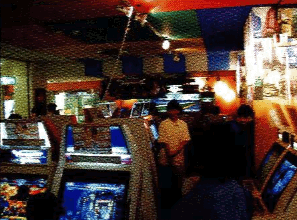
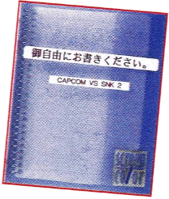
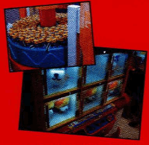
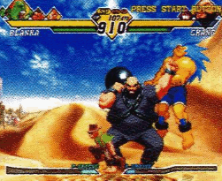
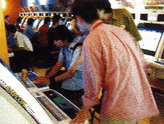

He's the nicest guy you'll know, running like the wind to meet customers in need. He's been working here for 4 years now, and is even admired by our regular customers.
THE STATE OF CVS2 AT PLAZA CAPCOM KICHIJOUJI
A Capcom-managed arcade. Only one floor, but with lots of square-footage, feeling very spacious. Beyond just being an arcade, it has facilities like a hamburger shop, letting players recharge before they get back to playing.

(A game area spacious enough for victory celebrations. Grab your 100 yen coins!)
There were three new fighting games that released this summer, but CvS2 has been received extremely well. It's been about twice what we expected. Traditional-style games have been a bit sluggish until now, but CvS2 has brought in an extremely large number of customers. There are two peak periods for the store, with the first being from 4 to 6. That's when a lot of regular customers and students come. The level of play then is extremely high. The second peak is a bit shorter, from 8 to 9, when it's mostly salarymen. Compared to those, the morning is pretty quiet. But from the evening on, things really heat up.

(The Communication Notebook set up at the location test. Some of the things written there were reflected in the retail version!)
THE MOST POPULAR CHARACTERS
On our head-to-head cabs, easy-to-user characters with similar special moves, like Ryu, Ken, Akuma and Morrigan, have been popular. When it comes to Grooves, there's been a lot of C-Groove, followed by S and N. I haven't seen much P-Groove. Lately, Ratio-4 Haohmaru has been getting popular. Ratio-4 makes for quick customer turnover, so from a personal standpoint I'm happy about that (laughs). On the other hand, not many people play charge characters like Guile, Honda and Blanka. SNK characters see pretty even usage.
TRADITIONAL GAME SLUMP
At the Kichijouji location, Medal Games and Prize Games make up about 60% of total revenue. There was a point where traditional games made up less than 10% of profits, but it's currently bounced back over 20% (as of August 2001).

(The prize area. Lots of Servbots and Afro-ken.)
THE EFFECT OF THE HOME VERSION
Naturally, we'll lose some customers once the home version comes out. That's just how it is, when a popular game is ported to home systems, sales drop. But there will always be people who use the home version to practice, and then come back to the store to fight. And when that happens, the quality of the fights shoots up. We have plans at our store to set up Dreamcast controllers, for people accustomed to playing with controllers on the home version.
But in the end, the home version is our rival (laughs).

(Minimal usage, minimal joy. Everyone! Let's give these characters some love and aim for the top! Using P-Groove, of course!)
ANY FINAL WORDS?
If you're at Plaza Capcom Kichijouji and have any technical issues, please feel free to let us know! I, or any one of our staff, will come rushing over to fix it right away!

(A coin slot jam! Fast as a Super Combo, Kondou-san rushes over to handle it!)